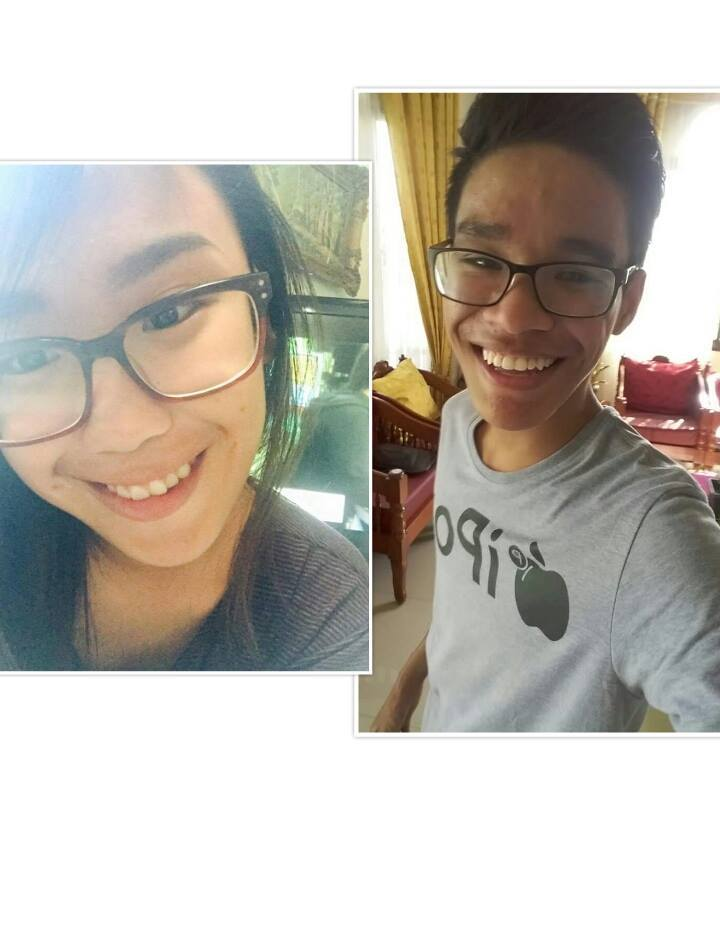
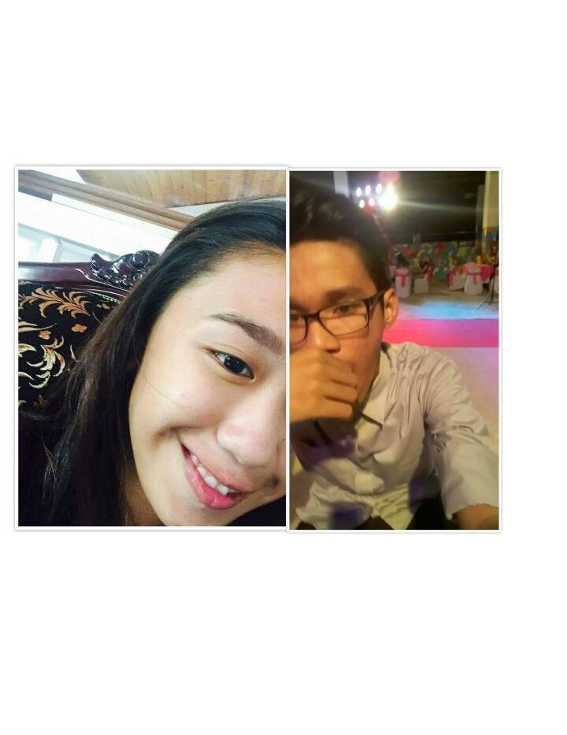

Jush


Hi mahal! Pinagalitan moko dahil sabi mo itulog ko nalang dahil tong mata ko hahahaha Ito yung mga pinagkakaabalahan ko sa mga nakaraang araw, kadwak nukwa ni Kuya JM nga nangprepare detoy, nagpatulongak. Awan ububrak madi hahahaha dala lang to ng sobrang pagmamahal ko sayo. Who cares nu syak ti mas agefeffort kanyata? I would like to make you happy and it is my responsibility to keep you happy. Akala mo school work to, hahahahaha pero hindi mas importante to sa school work. Alam kong corny pero pwede ba shattap ka muna? Papakain ko sayo yung "rib" mo kapag ano so ano 😂 play mo muna yung music below para may feels hahahahaha iloveyousomuch ❤️
Hello sa tourism student na mahal na mahal na mahal na mahal na mahal ko ti kinaballog mon nakadanun ka toy pusok yak corny hahahah it's been 2 months and I would love to spend more and more and more monthsaries or anniversaries with you it would be a pleasure mahal I know nga syak kakabayagam and SYAK LANG LAST MO NA TO madalas akong topakin pero lagi ka pading nanjan madalas tayong nagaaway ngayon kase nilamon ka na ng pokemon go, lol. Pero bubusugin kita ng pagmamahal ko. Sayo lang ako naging corny kaya shut up people change? Yes they do, we all do. But my love for you won't promise ko yan. You're not my prince. It would be an under statement to describe how precious you are to me. Kumbaga ikaw yung ika-250 na pokemon kasi di parin kumpleto pag wala ka. Alam ko na minsan nakakasawa nako pero thank God you're not giving up and I promise that I won't let you give up hahaha gulo ko no? Hahahaha pero malinaw na malinaw yung pagmamahal ko sayo mahal mas malinaw pa sa crystal dew. I would love you til' the moonlight and love you til' the day, everyday and always I will come to you in need and I'll help you when I can. I'll never be perfect but my love for you is. If destiny would not allow us to be together, tulpakek ni destiny nukwan HAHAHAHAHA I want it to be you, only you you're my one and only star. God, I'm so inlove with you, truly madly deeply crazy in love with you basol mo nu ipapatay nak ni duterte ikaw yung drugs ko eh, lol. If I would write about love, you would be the title. I promise that you will never be alone, never again ☺ my heart would serve as your home. Within the moments, when all of the things that surrounds us will be screwed up I will always be there, I won't leave you. Pagtulakan mo man ako palayo (Which is di mo kaya kase papataba ulit ako. I'm with you until the end of the road. I promise my love, my heart and my time. So don't worry this love is to precious for me to let go, kahit na topakin ka na gaya ko, kahit kamukha ka na ni snorlax, di kita iiwan, all of them guys can just fck off awan bibyang ko kanyada. Sayo lang ako may pakeeeeee. "You're the perfect melody, you're the only harmony that I wanna hear, you're my favorite part of me, when you're standing right next to me, I've got nothing to fear" you're a one in a million. Pakyu ka patay na patay ako sayo, i'm on the top of the world. "If you have a choice, what would you do?" I would love you eternally and I'll always choose you for the rest of my days. I can live without the money, I can live without fame or anything. Please promise me that you won't leave. What's point of living if you're not there while I'm living?‚ non sense nukwan bessy non sense. Walang dahilan para ako'y mapagod. You're an answered prayer. You're the one I couldn't live without. Even if the world would turn their back against me, as long as you're with me I'm still the champion . You're the best of me and I would love to fall in love again with you, over and over again You're the one, you are, you will and always will be , distance? I don't care all I know is I'm happy and I love you so much and that distance doesn't make sense at all. Our current situation is not our final destination just trust him and put him as the center of our relationship so that we can surpass it all problems? Scars are beautiful mahal, they bleed but I know we can surpass it all, tayo pa? do anything that will make you happy (basta haan nga babai pakyu) I will be the greatest fan of your life. Road to forever ❤️ Without you mahal is a waste of time kaya see you soon lalanding na yung eroplano sa noo mo ✌ smile mahal you have me for life somehow people tries to break us but dude, I won't let that happen fuck them hahahaha remember? "Ako'y sayo at ika'y akin lamang" I'm all about you my feelings for you grows everyday darating din yung panahon na di na natin kailangang magadjust, cause we'll be with each other na can't wait for that day sometimes, you never see you the way I see you ngem ammom nga ikaw yung taong pinangarap ko noon ngayon bukas at kailanpaman you're the best, the coolest guy I know you're always number one thank you for bringing my broken pieces together again, and I know that it won't fall apart again, kasi kadwak tay usto nga taon my love will never fail you, kanayon ka nga A+ nukwan I swear I would fight for us, and no one can touch this love , you and I will always be together forever you are more than I hope you could be (ikh4wzxc lhu4n6 5hu4ph4tx nhu4 ) mmk? Kasjay talaga I'll be your strength iloveyousomuch, until the end of the world and we'll won the battle against all odds and forever will began HAPPY SECOND MONTHSARY MAHALKO <3 ILOVEYOUSOMUCH! TO MORE MONTHS OF LOVE, WAR, KAJEJEHAN AND KAABNOYAN. ILOVEYOUSOMUCH ❤️
"MY LOVE"
"If I would have given a chance to say something before my last breath I would say that I love you until my death We will wait for years But I have no fears My love for you is undying If I lose you what is the sense of living? Your love to me is everything And for you, I’ll do anything You are not here beside me But I hope someday you’ll be "